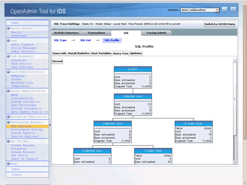
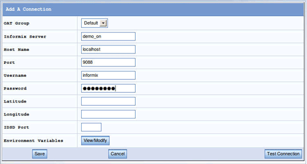

Informix
Archivierte Anleitung
Dieser Artikel wurde archiviert, da er - oder Teile daraus - nur noch unter einer älteren Ubuntu-Version nutzbar ist. Diese Anleitung wird vom Wiki-Team weder auf Richtigkeit überprüft noch anderweitig gepflegt. Zusätzlich wurde der Artikel für weitere Änderungen gesperrt.
Artikel für fortgeschrittene Anwender
Dieser Artikel erfordert mehr Erfahrung im Umgang mit Linux und ist daher nur für fortgeschrittene Benutzer gedacht.
Zum Verständnis dieses Artikels sind folgende Seiten hilfreich:
IBM Informix Dynamic Server (IDS)  ist eine gerade bei Linux-Anwendern beliebte kommerzielle objektrelationale SQL-Datenbank. Die IDS-Technologie basiert auf einer Kombination der "Multithreaded"-Architektur, der "Parallel Execution Engine" von Informix und den objektrelationalen Funktionen von Illustra (einer kommerziellen Version von Postgres). Die aktuelle IDS-Version unterstützt neben Datenkompression und Hochverfügbarkeit auch verschiedene Clustertopologien (inkl. Shared-Disk Unterstützung).
ist eine gerade bei Linux-Anwendern beliebte kommerzielle objektrelationale SQL-Datenbank. Die IDS-Technologie basiert auf einer Kombination der "Multithreaded"-Architektur, der "Parallel Execution Engine" von Informix und den objektrelationalen Funktionen von Illustra (einer kommerziellen Version von Postgres). Die aktuelle IDS-Version unterstützt neben Datenkompression und Hochverfügbarkeit auch verschiedene Clustertopologien (inkl. Shared-Disk Unterstützung).
Der folgende Artikel bezieht sich sowohl auf die kostenlose Entwickler Version (Developer Edition) der aktuellen Version 11.50 des Informix Dynamic Server als auch auf das kostenlose, grafische OpenAdmin Tool für IDS (OAT).
Installation¶
Die IDS 11.50 Entwickler-Edition ist in den Partner-Paketquellen [1] von Canonical für Ubuntu 8.04 enthalten. Über die Paketverwaltung lässt sich der Datenbankserver inklusive aller zugehörigen Pakete installieren. Ein für die Installation notwendiger Benutzer informix und eine Gruppe informix (siehe auch Benutzer und Gruppen) werden durch die Installation der Pakete ggf. automatisch angelegt.
Folgende Pakete müssen installiert [2] werden:
informix-ids, partner, Basisinstallation von Informix-Dynamic-Server
informix-ids-demo, partner, optional, Informix-Demo-Instanz
informix-csdk, partner, optional, Informix-Entwicklungs-Tools und -APIs
informix-pdo, partner, optional, Informix-PDO-Treiber für PHP5
Erste Schritte mit Informix¶
Benutzer informix¶
Im Rahmen der Paketinstallation wurde ein neuer Benutzer informix erzeugt. Dieser Benutzer ist der Standard-Datenbankadministrator. In einem ersten Schritt sollte man diesem Benutzer ein Passwort zuteilen (Benutzer und Gruppen) z.B. mithilfe des Kommandos:
sudo passwd informix
Danach hat man die Möglichkeit sich im Terminal als Benutzer informix anzumelden
su - informix
Umgebungsvariablen¶
Damit man als Benutzer informix eine Informix-Instanz administrieren kann, sollten folgende Umgebungsvariablen korrekt gesetzt sein: $INFORMIXDIR, $PATH, $INFORMIXSERVER, $ONCONFIG und ggf. auch noch $INFORMIXSQLHOSTS und $TERMCAP.
| Umgebungsvariable | Bedeutung | Standardwert(e) |
$INFORMIXDIR | Zeigt normalerweise auf das Informix-Installationsverzeichnis | Unter Ubuntu ist dies normalerweise /opt/IBM/informix |
$PATH | Sollte $INFORMIXDIR/bin beinhalten | |
$INFORMIXSERVER | Der Name der zu verwendenden Informix-Instanz | Nach der Installation von informix-ids-demo ist dies "demo_on" |
$ONCONFIG | Der Name der aktuellen Informix-Konfigurationsdatei | $ONCONFIG bezeichnet eine Datei relativ zum $INFORMIXDIR/etc Verzeichnis. $ONCONFIG der Demo-Instanz zeigt auf "onconfig.demo_on" |
$INFORMIXSQLHOSTS | Zeigt auf eine Datei, die die notwendigen Informationen zur Kommunikation mit der Informix-Instanz beinhaltet | Nach der Installation des Pakets informix-ids-demo sollte $INFORMIXSQLHOSTS auf die Datei /opt/IBM/informix/etc/sqlhosts.demo_on zeigen. Wird $INFORMIXSQLHOSTS nicht gesetzt, wird als Standard die Datei /opt/IBM/informix/sqlhosts verwendet. |
$TERMCAP | Optional: Wird z.B. für den interaktiven Modus von "dbaccess" benötigt | Sollte auf /opt/IBM/informix/etc/termcap zeigen |
Hat man das Paket informix-ids-demo installiert, kann man die notwendigen Umgebungsvariablen sehr leicht setzen, in dem man folgendes Kommando in der /bin/bash- oder /bin/ksh-Shell ausführt:
. /opt/IBM/informix/demo/server/profile_settings
Alternativ kann man für die /bin/csh-Shell folgendes Kommando zum Setzen der Informix-Umgebungsvariablen nutzen:
source /opt/IBM/informix/demo/server/profile_settings.csh
Es empfiehlt sich, die fraglichen Umgebungsvariablen in den entsprechenden Autostartskripten der Login-Shells zu setzen.
Starten, Stoppen und Status der Informix-Instanz¶
Das Starten und Stoppen der Informix-Datenbank-Instanz kann nur vom Benutzer "informix" durchgeführt werden. Zum Starten der Instanz führt man normalerweise folgendes Kommando aus:
oninit
Zum Stoppen der Instanz verwendet man normalerweise folgendes Kommando:
onmode -ky
Um den aktuellen Status der Informix-Instanz abzufragen verwendet man:
onstat -
oder auch:
onstat -m
Automatisches Starten von Informix¶
Im Normalfall möchte man die Informix-Datenbank beim Hochfahren von Ubuntu automatisch starten. Für diesen Zweck benötigt man ein /etc/init.d Skript (Dienste) für Informix. Im Folgenden ein Beispiel für ein /etc/init.d/informix Skript, dass die Informix Demo-Instanz automatisch startet. Man erzeugt mithilfe eines Editors und Root-Berechtigung die Datei /etc/init.d/informix mit folgendem Inhalt:
1 2 3 4 5 6 7 8 9 10 11 12 13 14 15 16 17 18 19 20 21 22 23 24 25 26 27 28 29 30 31 32 33 34 35 36 37 38 39 40 41 42 43 44 45 46 47 48 | #!/bin/sh ### BEGIN INIT INFO # Provides: informix # Required-Start: $local_fs $remote_fs $network $syslog # Required-Stop: $local_fs $remote_fs $network $syslog # Default-Start: 2 3 4 5 # Default-Stop: 0 1 6 # Short-Description: Start/Stop des Informix Dynamic Servers (Demo-Instanz) # Description: ### END INIT INFO INFORMIXSERVER=demo_on INFORMIXDIR="/opt/IBM/informix" ONCONFIG="onconfig.demo_on" INFORMIXSQLHOSTS="/opt/IBM/informix/etc/sqlhosts.demo_on" PATH=${INFORMIXDIR}/bin:${PATH} export INFORMIXSERVER INFORMIXDIR ONCONFIG INFORMIXSQLHOSTS PATH export IFX_NO_TIMELIMIT_WARNING=1 if [ $# -lt 1 ] then echo "Usage: $0 {start|stop}" else case "$1" in 'start') if [ `$INFORMIXDIR/bin/onstat 2>&- | grep -c On-Line` -ne 1 ] then rm -f /INFORMIXTMP/* rm -f /opt/IBM/informix/demo/server/online*.log rm -f /opt/IBM/informix/tmp/* echo -n "Starting Informix Dynamic Server 11.50..." $INFORMIXDIR/bin/oninit echo "done" fi ;; 'stop') if [ `$INFORMIXDIR/bin/onstat 2>&- | grep -c On-Line` -eq 1 ] then echo -n "Shutting down Informix Dynamic Server 11.50..." $INFORMIXDIR/bin/onmode -ky echo "done" fi ;; *) echo "Usage: $0 {start|stop}" ;; esac fi |
Nach dem Speichern der /etc/init.d/informix-Datei muss man die Berechtigungen korrekt setzen:
sudo chmod 755 /etc/init.d/informix
Zum Schluss ruft man folgendes Kommando auf:
sudo update-rc.d informix defaults
Möchte man den Informix-Autostart deaktivieren, führt man folgendes Kommando aus:
sudo update-rc.d -f informix remove
Erzeugen von Datenbanken, Tabellen und Verwenden von SQL-Skripten¶
Möchte man als Anwender neue Datenbanken in einer Informix-Instanz erzeugen oder Tabellen in einer Datenbank definieren, so bietet sich das dbaccess-Programm dafür an. Bevor man dbaccess verwenden kann, sollte man sicherstellen, dass die notwendigen Umgebungsvariablen (s. den entsprechenden Abschnitt) für den jeweiligen Benutzer gesetzt sind. Um dbaccess im interaktiven Modus zu verwenden, wird es so aufgerufen:
dbaccess
Man kann mittels dbaccess auch SQL-Skripte im Batchbetrieb ausführen:
dbaccess <Datenbankname> <SQL_Skript_Name>.sql
Die "stores_demo"- und "superstores_demo"-Demodatenbanken¶
Man hat bei Informix die Möglichkeit, zwei verschiedene Demodatenbanken zu Testzwecken sehr leicht zu erzeugen. Für eine Demodatenbank (stores_demo ) mit einem klassischen relationalen Datenmodell kann man folgendes Kommando ausführen:
dbaccessdemo -log
Für eine Demodatenbank (superstores_demo ), die u.a. die erweiterten Möglichkeiten der objektrelationalen Eigenschaften von Informix demonstriert, ruft man folgende Kommandos auf. Die ersten drei Kommandos muss man als Benutzer informix ausführen. Das Kommando dbaccessdemo9 kann jeder berechtigte Benutzer der Informix-Instanz aufrufen:
touch /opt/IBM/informix/demo/server/s9_sbspc
chmod 660 /opt/IBM/informix/demo/server/s9_sbspc
onspaces -c -S s9_sbspc -p /opt/IBM/informix/demo/server/s9_sbspc -o 0 -s 4000
dbaccessdemo9 -log
Installation des (grafischen) OpenAdmin Tool (OAT) für IDS¶
Das OpenAdmin-Tool für IDS ist eine kostenloses PHP-/web-basiertes, grafisches Administrations-Tool für IDS ab der Version 11.10 und höher. OAT kann bei Bedarf auch unabhängig von Informix Dynamic Server installiert werden, z.B. für die Fernwartung von Informix-Instanzen.
|  |
| Das OpenAdmin Tool für IDS (hier: SQL-Trace) |
Installation¶
Um OAT nutzen zu können, installiert man folgendes Paket:
informix-oat, partner
Damit ist die Erstinstallation und die Erstkonfiguration von OAT abgeschlossen. Nun öffnet man die folgende URL in einem Webbrowser (z.B. Firefox) um die Grundkonfiguration von OAT zu starten:
http://localhost:8082/openadmin/index.php
Grundkonfiguration von OAT¶
Bevor man mit OAT Informix-Instanzen verwalten kann, muss man im Prinzip noch zwei Konfigurationsschritte durchführen:
Einen Eintrag oder mehrere Einträge in der OAT-Verbindungsdatenbank erzeugen
Das Adobe Flash Plugin für den Webbrowser installieren
Um einen Eintrag in der OAT-Verbindungsdatenbank zu erzeugen, sollte man den nachstehenden Arbeitsschritten folgen. Als Beispiel werden die Verbindungsinformationen für die demo_on Demo-Instanz verwendet, die automatisch vom Informix Ubuntu Installations Paket informix-ids-demo angelegt wird:
|  |
| Definition einer Datenbankverbindung in OAT |
Starten von OAT im Webbrowser über die folgende URL:
http://localhost:8082/openadmin/index.php
Auf der Einstiegsseite links oben die "Admin"-Option auswählen.
Aus dem "Manage Connections"-Menü auf der linken Seite wählt man "Add Connection".
Die "OAT Group" sollte man am besten erst einmal auf "Default" belassen.
"Informix Server" definiert man als "demo_on".
"Host Name" setzen man auf "localhost".
"Port" ist für die demo_on Instanz "9088".
Als "Username" verwendet man "informix" und als "Password" sollte man das für den Benutzer
informixvergebene Passwort verwenden (siehe auch den Abschnitt Benutzerinformix).Sollte die Informix-"demo_on"-Instanz laufen, kann man die Verbindungsdaten über die Option "Test Connection" testen.
In jedem Fall sollten man die Verbindungsdaten durch einen
 -Klick auf "Save" sichern.
-Klick auf "Save" sichern.
Danach kann man durch Auswahl der Option "Login" in der linken, oberen Ecke von OAT auf die Anmeldeseite von OAT zurückwechseln. Um die Anmeldung an die "demo_on"-Instanz zu testen, sollte man Folgendes machen:
Im "Quick Login"-Fenster sicherstellen, dass die "OAT Group" "Default" ausgewählt wurde. Dass "Password"-Feld sollte leer sein. Durch Klicken auf "Get Servers" den Eintrag "demo_on@localhost" auswählen.
Danach klickt man im "Server Details" Fenster auf "Login".
Sehr wahrscheinlich wird man jetzt einen Hinweis bekommen, dass das "Adobe Flash"-Plugin fehlt. Sollte die Meldung kommen, installiert man das Flash Plugin gemäß der Hinweise im Browserfenster.
Damit ist die Grundkonfiguration von OAT abgeschlossen und kann eingesetzt werden.
Hinweis:
Sollte die URLs http://localhost:8082/openadmin/install oder http://localhost:8082/openadmin/index.php nicht funktionieren, könnte es sein, dass die Installationsprozedur für das informix-oat-Paket eine andere Portnummer vergeben hat. Man findet die aktuell vergebene Portnummer in folgender Datei: /usr/share/doc/informix-oat/README.Debian.

- Erstellt mit Inyoka
-
 2004 – 2017 ubuntuusers.de • Einige Rechte vorbehalten
2004 – 2017 ubuntuusers.de • Einige Rechte vorbehalten
Lizenz • Kontakt • Datenschutz • Impressum • Serverstatus -
Serverhousing gespendet von